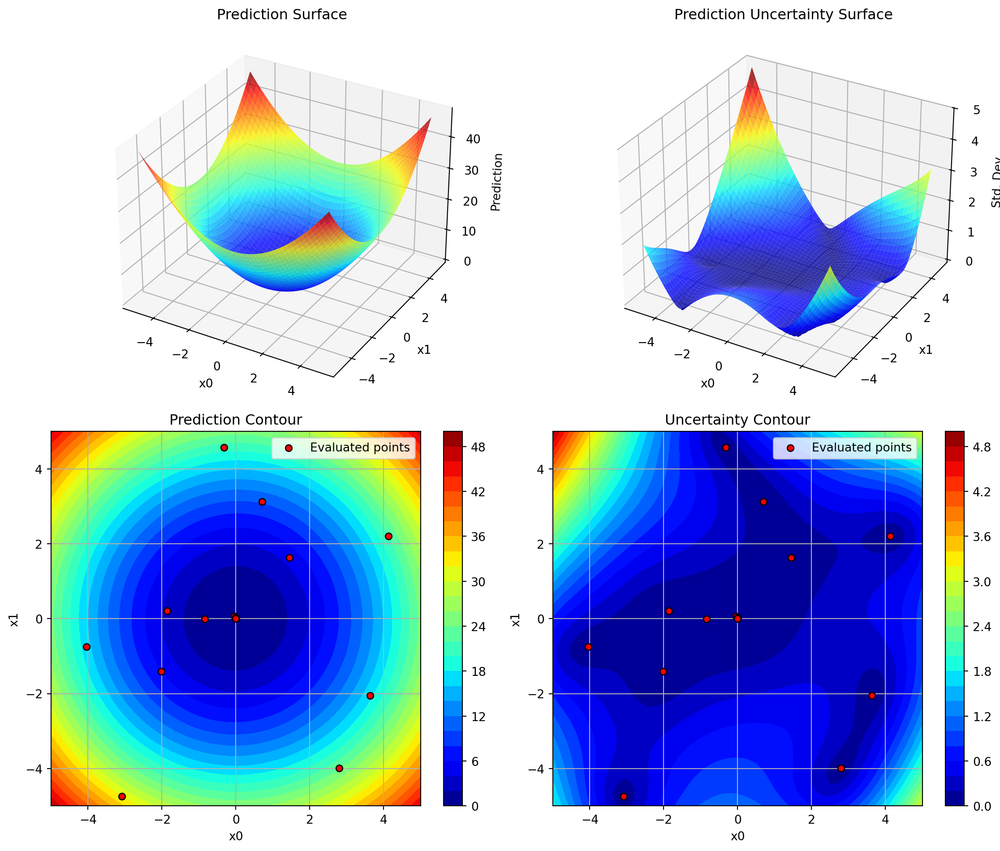
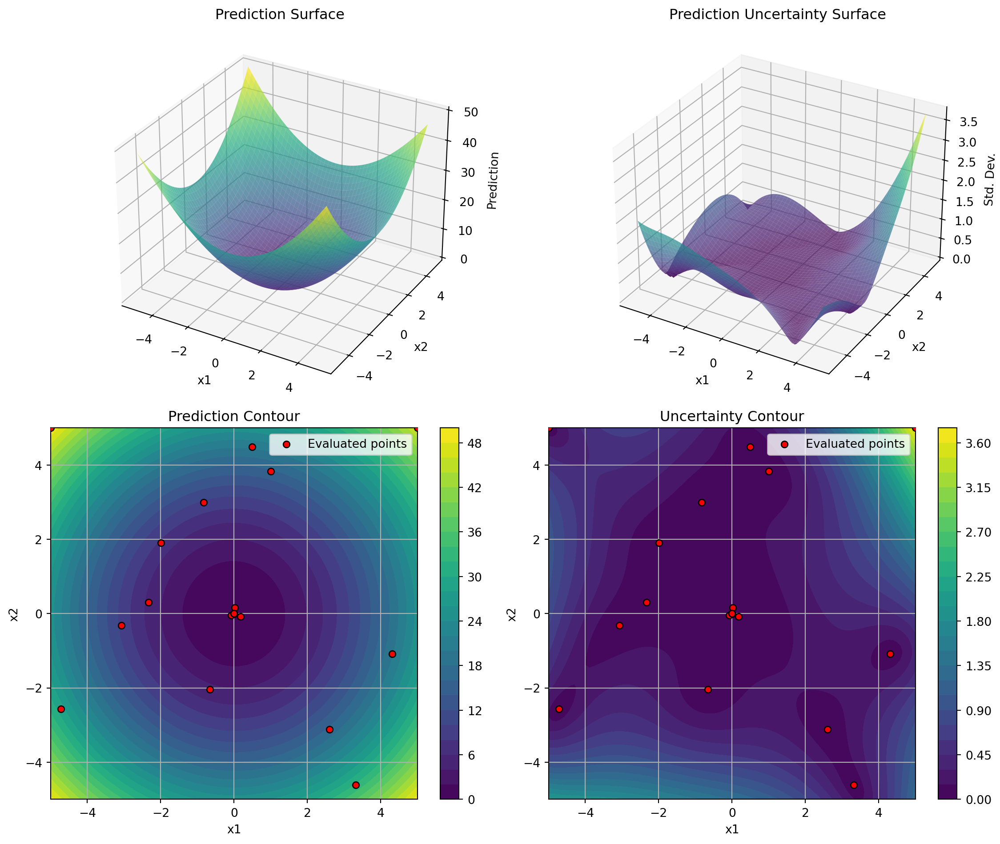
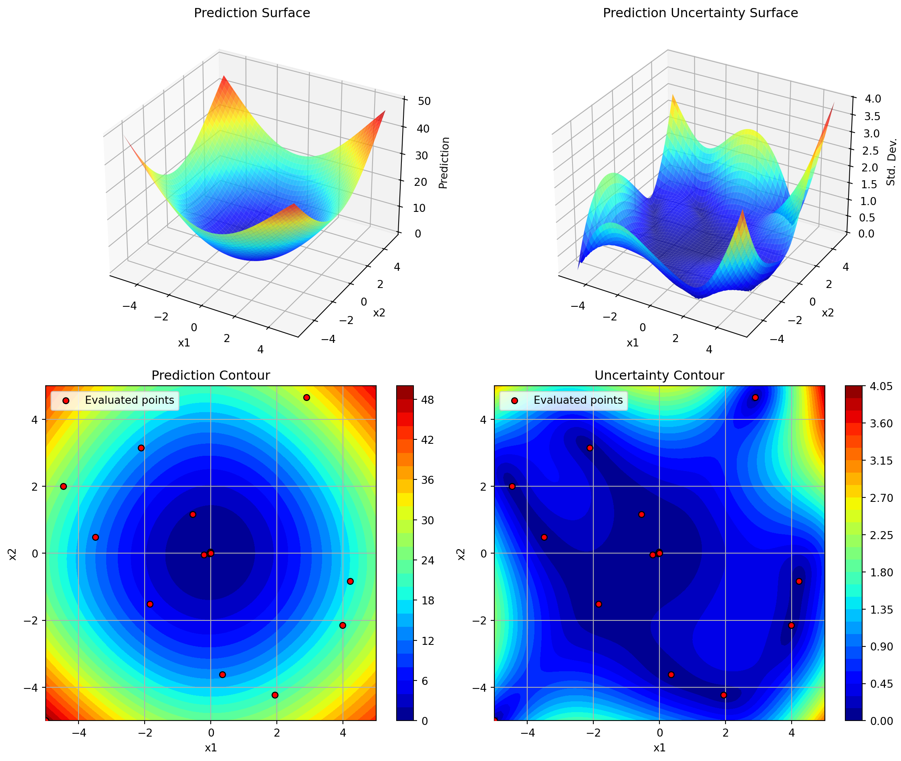
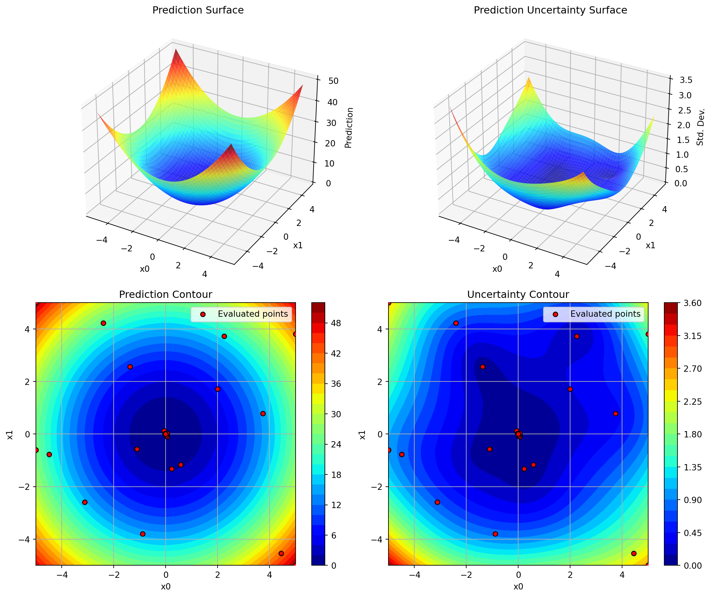
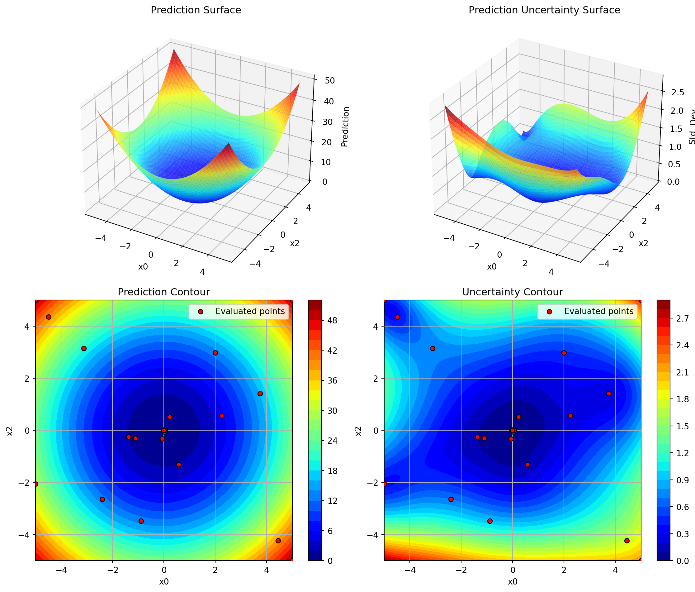
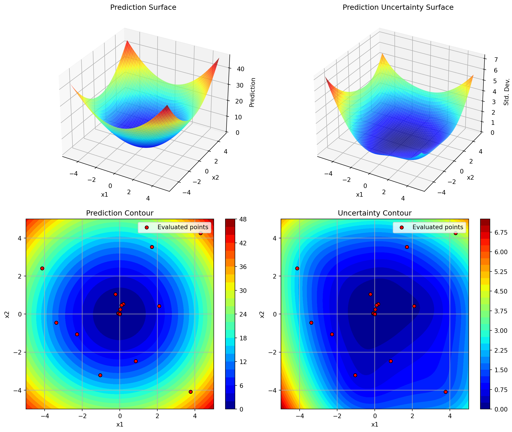

This document describes the plot_surrogate() method added to the SpotOptim class, which provides visualization capabilities similar to the plotkd() function in the spotpython package.
19.1 Overview
The plot_surrogate() method creates a comprehensive 4-panel visualization of the fitted surrogate model, showing both predictions and uncertainty estimates across two selected dimensions.
19.2 Features
3D Surface Plots: Visualize the surrogate’s predictions and uncertainty as 3D surfaces
Contour Plots: View 2D contours with overlaid evaluation points
Multi-dimensional Support: Visualize any two dimensions of higher-dimensional problems
Customizable Appearance: Control colors, resolution, transparency, and more
19.3 Usage
19.3.1 Basic Usage
import numpy as npfrom spotoptim import SpotOptim# Define objective functiondef sphere(X):return np.sum(X**2, axis=1)# Run optimizationoptimizer = SpotOptim(fun=sphere, bounds=[(-5, 5), (-5, 5)], max_iter=20)result = optimizer.optimize()# Visualize the surrogate modeloptimizer.plot_surrogate(i=0, j=1, show=True)

19.3.2 With Custom Parameters
optimizer.plot_surrogate( i=0, # First dimension to plot j=1, # Second dimension to plot var_name=['x1', 'x2'], # Variable names for axes add_points=True, # Show evaluated points cmap='viridis', # Colormap alpha=0.7, # Surface transparency num=100, # Grid resolution contour_levels=25, # Number of contour levels grid_visible=True, # Show grid on contours figsize=(12, 10), # Figure size show=True# Display immediately)

19.3.3 Higher-Dimensional Problems
For problems with more than 2 dimensions, plot_surrogate() creates a 2D slice by fixing all other dimensions at their mean values:
import numpy as npfrom spotoptim import SpotOptim, Krigingdef sphere(X):return np.sum(X**2, axis=1)optimizer = SpotOptim( fun=sphere, bounds=[(-5, 5), (-5, 5)], surrogate=Kriging(seed=42), # Use Kriging instead of GP max_iter=20)result = optimizer.optimize()# The plotting works the same with any surrogateoptimizer.plot_surrogate(var_name=['x1', 'x2'])

19.6.3 Example 3: Comparing Different Dimension Pairs
# 3D problem - visualize all dimension pairsdef sphere_3d(X):return np.sum(X**2, axis=1)optimizer = SpotOptim( fun=sphere_3d, bounds=[(-5, 5)] *3, max_iter=25)result = optimizer.optimize()# Dimensions 0 vs 1optimizer.plot_surrogate(i=0, j=1, var_name=['x0', 'x1', 'x2'])# Dimensions 0 vs 2optimizer.plot_surrogate(i=0, j=2, var_name=['x0', 'x1', 'x2'])# Dimensions 1 vs 2optimizer.plot_surrogate(i=1, j=2, var_name=['x0', 'x1', 'x2'])



19.7 Tips and Best Practices
Run Optimization First: Always call optimize() before plot_surrogate()
Choose Dimensions Wisely: For high-dimensional problems, plot dimensions that you suspect are most important or interactive
Adjust Resolution: Use lower num values (e.g., 50) for faster plotting, higher values (e.g., 200) for smoother surfaces
Color Scales: Set vmin and vmax explicitly when comparing multiple plots to ensure consistent color scales
Uncertainty Analysis: High uncertainty areas (bright colors in uncertainty plots) are good candidates for additional sampling
Exploration vs Exploitation: Red dots clustered in low-prediction areas show exploitation; spread-out dots show exploration
19.8 Comparison with spotpython’s plotkd()
The plot_surrogate() method is inspired by spotpython’s plotkd() function but adapted for SpotOptim’s simplified interface:
19.8.1 Similarities
Same 4-panel layout (2 surfaces + 2 contours)
Visualizes predictions and uncertainty
Supports dimension selection and customization
19.8.2 Differences
Integration: Method of SpotOptim class (no separate function needed)
Simpler: Fewer parameters, more sensible defaults
Automatic: Uses optimizer’s bounds and data automatically
Type Handling: Automatically applies variable type constraints (int/float/factor)
19.9 Error Handling
The method validates inputs and provides clear error messages:
# Before optimization runsoptimizer.plot_surrogate() # ValueError: No optimization data available# Invalid dimension indicesoptimizer.plot_surrogate(i=5, j=1) # ValueError: i must be less than n_dim# Same dimension twiceoptimizer.plot_surrogate(i=0, j=0) # ValueError: i and j must be different
19.10 See Also
notebooks/demos.ipynb: Example 4 demonstrates plot_surrogate()
examples/plot_surrogate_demo.py: Standalone example script
tests/test_plot_surrogate.py: Comprehensive test suite